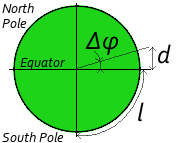

Introduction
One key element of Twetailer/Lusanga concept is the locality:
actors contact the hub to get information about products and services in
their area. For sure, the coordinates of the area can be dynamically
specified, as the range to consider around the area center.
Here is a scenario Twetailer will be able to serve:
- A politician working Montreal downtown needs to call a cab to
go to the airport.
- He contacts Twetailer with the following request: #taxi YUL
airport loc: H3C 2N6 CA.
- Almost immediately, two drivers from nearby stations reply and
their proposals are forwarded to the politician.
- The man picks one, confirms the proposal, and goes into the
street to take the cab.
- Knowing his meeting is Ottawa downtown, he wants to bring back
one of the famous "Obama's maple leaf cookie".
- Because he does not remember the exact store, he queries
Twetailer with: "Obama cookie market loc:Ottawa CA".
- Twetailer forwards the response from the baker Claude Bonnet:
"Obama Maple Leaf Cookie Byward Market price:$8.50 store:32443".
- Once out of his meeting, the visitor will just have to send
"!list store:32443: to get the exact store coordinates ;)
Location resolution from a postal code
The easiest way to specify a location to Twetailer is to give the
corresponding postal code. They are many third party services offering
public API to validate them and to get the corresponding
geo-coordinates.
Location resolution from a city name
From the usability point of view, forcing users to get the postal
code of the targeted area for a demand is not very friendly, especially
for travelers. The system should allow them to enter full addresses, or
just city names. As for now, very third party providers offer the
possibility to validate this type of entries (Google Maps as documented
in the previous section, Yahoo! Maps, and Live Maps).
The key element is the country code which should continue to be
required. But that's not sufficient because if there's only one "Paris,
FR", there are many "Paris, US". The system cannot just report �invalid
location� in such a situation. The error handling mechanism should be
precisely tuned here.
One side-effect of the of letting users entering full addresses
instead of simple postal codes is the multiplication of Location
instances in the system. It might be important to consolidate all
physical addresses by postal code to reduce the amount of Location
instances, then reducing the complexity of the algorithm matching
demands and stores.
Computation of the area around a location
The following picture illustrates the globe with the latitude
(horizontal lines, like the red one)
and the longitude (vertical lines, like the green
one).
Illustration of the latitude and longitude on the globe
By convention:
- The latitude (φ) is the angle from a point on the Earth's
surface to the equatorial plane. At the Equator (red line), the latitude is 0°. On the
North pole, the latitude is 90° and on the South pole it is
-90°.
- The longitude (λ) is the angle east or west of a
reference meridian (vertical line). The Prime meridian green line) passing in the back of the
Royal Observatory, Greenwich (near London in UK) is the zero-longitude
reference.
For its computing algorithm, Twetailer uses the following
approximations:
- The
distance of
1 km (d) on a longitude line means a variation
(Δφ) of 0.009° of latitude.
Δφ1km = complete horizon / equatorial circumference = 360° / 40,075 km = 0.009°
- The
distance of
1 mi (d) on a longitude line means a variation
(Δφ) of 0.0144° of latitude.
 The distance
of
The distance
of 1 km on the Equator latitude line means a variation
(Δλ) of 0.009° of longitude.Δλ1km,equator = asin( 1 / earth radius) = asin (2 * π / 40,075) = 0.009°
- Greater is the latitude, more degrees on the longitude are
covered by this distance, inversely proportional to the cosinus of the latitude.
Δλ1km,&phi = asin( 1 / earth radius / cos(φ)) = asin (2 * π / 40,075 / cos(φ))Δλ1km,0° = asin( 1 / earth radius / cos(0°)) = asin (2 * π / 40,075 / 1) = 0.009°Δλ1km,45° = asin( 1 / earth radius / cos(45°)) = asin (2√2 * π / 40,075) = 0.0127°Δλ1km,60° = asin( 1 / earth radius / cos(60°)) = asin (4 * π / 40,075) = 0.0180°Δλ1km,80° = asin( 1 / earth radius / cos(80°)) = asin (2 * π/ 40,075 / 0.1736 ) = 0.0517°